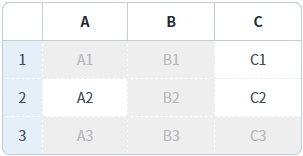
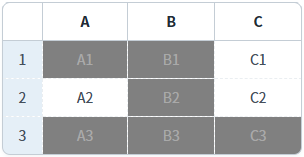
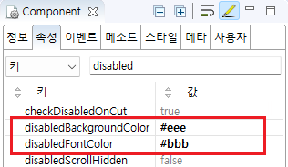

GridView의 비활성화된 셀의 배경색과 글자색을 설정한 예제입니다.
이 기능은 GridView의 disabledBackgroundColor 속성과 disabledFontColor 속성을 사용하여 설정하거나, CSS class 'w2grid_default_disabled'를 재정의하여 설정할 수도 있습니다.
비활성화 된 셀의 배경색, 글자색 설정 - 속성
비활성화 된 셀의 배경색, 글자색 설정 - class 정의
예제 영역 '비활성화된 셀의 배경색, 글자색 설정 - 속성'에 구성된 GridView에서 테스트합니다.1
STEP 1: 실행 결과를 확인합니다.
비활성화된 셀의 배경색과 글자색이 변경됩니다.
다음의 조건에 해당하는 셀이 비활성화 되었습니다. - 첫 번째 행의 'A' 컬럼의 셀 - 'B' 컬럼의 셀 - 세 번째 행의 셀
셀을 클릭하면 수정 모드로 변경되지만, 비활성화된 셀은 수정 모드로 변경되지 않습니다.
Image 1.브라우저(Chrome) 실행 예시

예제 영역 '비활성화된 셀의 배경색, 글자색 설정 - class 정의'에 구성된 GridView에서 테스트합니다.1
STEP 1: 실행 결과를 확인합니다.
비활성화된 셀의 배경색과 글자색이 변경됩니다.
다음의 조건에 해당하는 셀이 비활성화 되었습니다. - 첫 번째 행의 'A' 컬럼의 셀 - 'B' 컬럼의 셀 - 세 번째 행의 셀
셀을 클릭하면 수정 모드로 변경되지만, 비활성화된 셀은 수정 모드로 변경되지 않습니다.
Image 2.브라우저(Chrome) 실행 예시

GridView의 속성을 정의합니다.
[필수] disabledBackgroundColor="설정 값" //비활성화된 셀 또는 행의 배경색
예시1) disabledBackgroundColor="#eee"
예시2) disabledBackgroundColor="blue"
[필수] disabledFontColor="설정 값" //비활성화된 셀 또는 행의 배경색
예시1) disabledFontColor="#bbb"
예시2) disabledFontColor="yellow"
Image 3.웹스퀘어 스튜디오의 Component View - 속성 설정 예시

Example 1.Source
<!-- gridView 의 소스 본문 예시 --> <w2:gridView disabledBackgroundColor="#eee" disabledFontColor="#bbb"> <!-- 중략 --> </w2:gridView>
1
비활성화된 셀에 적용할 class를 정의합니다.
프로젝트에서 import하고 있는 CSS 파일에 아래와 같이 class를 정의합니다. 이 예제에서 사용할 class는 'w2grid_default_disabled' 입니다. 이 class는 비활성화된 셀에 추가됩니다. (element의 td에 추가) 기 선언된 공통 class의 selector 우선 순위에서 밀릴 수 있기 때문에 구체적으로 선언하는 것이 좋습니다.
이 예제는 이 예제에서만 동작되도록 GridView의 class 속성에 'P00189_exam2'를 추가하였습니다.
Example 2.CSS
/* 프로젝트 전체에 적용하는 경우 아래와 같이 정의합니다. */ .w2grid_default_disabled {background-color: #808080 !important; color: #A9A9A9 !important;}
Example 3.CSS
/* 이 예제 파일에서 사용한 class는 다음의 경로에서 확인할 수 있습니다. */ /* [프로젝트 경로]/WebContent/css/example.css */ /* P00189.xml 예제 */ .P00189_exam2 .w2grid_default_disabled {background-color: #808080 !important; color: #A9A9A9 !important;}
disabledBackgroundColor
disabledFontColor
setCellDisabled( rowIndex , colIndex , disabled )
setColumnDisabled( colIndex , disabled )
setRowDisabled( rowIndex , disableFlag )